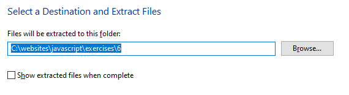

Learning Goals
In this Lesson, you will learn:
- Definition of the DOM and its basic concepts
- How to select elements in the DOM by id, HTML tag and CSS class
In this Lesson, you will meet the following term:
- DOM
Exercise Files
In this Lesson, you will work with the following HTML files:
Download the compressed file below and copy it to your websites/javascript/exercises sub-folder.
📄 11.zip
Unzip the files it contains into a sub-folder named /11.
About the DOM
When a web browser accesses a web page – also known as an HTML document – it performs two operations. It:
- Displays (renders) the web page in the browser, using any links in the page to CSS, image, video font and other files.
- Creates a Document Object Model (DOM) of the web page which enables the page's content to be accessed and modified by JavaScript code. In effect, the DOM is a application programming interface.

Except in the following two instances, the HTML source code of a web page and the contents of its DOM will be the same:
- The browser has found HTML errors in the web page and has automatically fixed them when creating the DOM.
- The DOM has been modified by JavaScript, typically as the result of some user action such as clicking/tapping a button.
DOM terminology
To work with the DOM using JavaScript, it is important to understand a few key terms. Consider the HTML code below.
<a href="index.html">Home</a>
- a is the tag
- href is the attribute
- index.html is the attribute value
- Home is the text.
Everything between the opening <a and closing /a> tag pair makes the entire HTML element.
HTML element
Content in a web page that is marked up with an HTML tag. Most HTML elements (such as body, div, h1 and p) begin and end with an opening and closing tag pair. Others, such as link and img, are said to be self-closing. HTML elements may contain attributes with values.
A typical web page will contain many levels of elements nested inside one another in a parent-child relationship. Elements at the same level in a web page are said to be siblings.
The DOM tree and nodes
Like the HTML web page it represents, a DOM has a tree-like structure. All items in the DOM are defined as nodes.

Node types
Every node in a DOM has a node type, accessed through the nodeType property. Three of the most common node types are as follows:
- Document node: The web page itself, which is the root or parent of all other nodes in the HTML file.
- Element node: An HTML element in a web page. Examples of element nodes would include <h1>Main Heading</h1> and <p>Hello world</p>.
- Text nodes: A text string. Typically, a text node is a child of a parent element node, such as the text nodes Main Heading and Hello world above. However, a text node can also exist outside an element node.
All DOM nodes, including the document node, have a nodeType property with a numeric value. See the table below.
Node |
Node Type |
|---|---|
document |
9 |
element |
3 |
attribute |
2 |
text |
1 |
You can see a full list of node types on the MDN website.
Exercise 11.1: Exploring node types
- Open the following file in VS Code and your Google Chrome or Brave web browser: 📄 exercise-11-1.html
- Open the DevTools window and then display the Elements tab. When you click on and highlight any line in the DOM, you can see that its nodeType value appears next to it.

- Leave the file open in VS Code and your web browser.
Before you can work with an HTML element, you have to select it from the web page that contains it. The most common DOM selection methods are listed below.
Selecting a single element by its unique id
If your target HTML element has a unique id, you can use the document.getElementById() method to select it. Both the method syntax and the target id are case-sensitive.
The following code will retrieve an element with an id of "box-highlight".
document.getElementById("user-message")
A newer and alternative way of selecting an element with a unique id is the document.getElementById() method. See the example below.
document.querySelector("#user-message")
Note that, with this second method, you must include a hash (#) character before the element id.
If there is more than one element with the same id in the web page (which there should not be!), the above two methods return the first element found. A null value is returned if no element with the target id exists in the web page.
Exercise 11.1 (continued): Selecting an element by id
- In VS Code, scroll down to the showResponse(id) function, and add the following two branches:
if (id==="1") { console.log("SELECTING BY UNIQUE ID"); let el_ID_1 = document.getElementById("user-message"); console.log("document.getElementById(): "+el_ID_1); } else if (id==="2") { console.log("SELECTING BY UNIQUE ID"); let el_ID_2 = document.querySelector("#user-message"); console.log("document.querySelector(): "+el_ID_2); } - Save the exercise file, reload it in your web browser and click the first two buttons for selecting by id.
- In the DevTools window, note the output in the Console tab.

Selecting multiple elements by HTML tag
Not every element you want to access in a web page will have a unique id.
To select all elements with a particular HTML tag, use the document.getElementsByTagName() method. The following code selects all elements with the <h2> tag.
document.getElementsByTagName("h2")
A newer and alternative way of selecting elements with a target tag is document.querySelectorAll(). See the example below.
document.querySelectorAll(h2)
A related method is document.querySelector(), which returns only the first element in the web page with the target HTML tag. For example, if a web page has 10 sub-heaings with a h2 tag, the code below will rerurn only the first one as a single object.
document.querySelector(h2)
Exercise 11.1 (continued): Selecting elements by tag
- In VS Code, scroll down to the showResponse(id) function of the exercise-11.1.html file, and add the following three branches:
else if (id==="3") { console.log("SELECTING BY HTML TAG"); let els_Tag_1 = document.getElementsByTagName("p"); console.log("document.getElementsByTagName(): "+els_Tag_1); } else if (id==="4") { console.log("SELECTING BY HTML TAG"); let els_Tag_2 = document.querySelectorAll("p"); console.log("document.querySelectorAll(): "+els_Tag_2); } else if (id==="5") { console.log("SELECTING BY FIRST HTML TAG"); let els_Tag_3 = document.querySelector("p"); console.log("document.querySelector(): "+els_Tag_3); } - Resave the exercise file, reload it in your web browser and click the relevant three buttons for selecting by HTML tag.
- In the DevTools window, note the output in the Console tab.

Selecting multiple elements by CSS class
To select elements by their CSS class, use the getElementsByClassName() method. The code below selects the one or more elements with a class of "text-center".
document.getElementsByClassName("text-center");
You can also use the document.querySelectorAll(".text-center") method for this purpose. See below.
document.querySelectorAll(".text-center")
Note that, with this second method, you must include a dot (.) character before the target class name.
An advantage of the document.querySelectorAll() and document.querySelector() methods is that you can specify a chain of ids, tags and classes as their arguments. Here are two examples.
document.querySelectorAll("main section #introduction ".text-center")
document.querySelector("#js-bpx p")
Exercise 11.1 (continued): Selecting elements by tag
- In VS Code, scroll down to the showResponse(id) function of the exerise-11.1.html file, and add the following three branches:
else if (id==="6") { console.log("SELECTING BY CSS CLASS"); let els_Class_1 = document.getElementsByClassName("text-center"); console.log("document.getElementsByClassName(): "+els_Class_1); } else if (id==="7") { console.log("SELECTING BY CSS CLASS"); let els_Class_2 = document.querySelectorAll(".text-center"); console.log("document.querySelectorAll(): "+els_Class_2); } else if (id==="8") { console.log("SELECTING BY FIRST CSS CLASS"); let els_Class_3 = document.querySelector(".text-center"); console.log("document.querySelectorAll(): "+els_Class_3); } - Resave the exercise file, reload it in your web browser and click the relevant three buttons for selecting by CSS class.
- In the DevTools window, note the output in the Console tab.

About HTML collections and node lists
When you select a single element by its unique id, JavaScript returns just one object.
When selecting HTML elements by tag or class, however, JavaScript returns a so-called collection. To be more exact, JavaScript returns one of two types of collections. Each type is very similar to an array:
- HTML collection: As its name suggests, this is a list of HTML elements.
- Node list: As its name suggests, this is a list of DOM nodes.
Just as you can with an array, you can access elements in either type of collection by their index number (beginning with zero). To view how many elements there are in either collection type, use the length property.
And you can interate through both HTML collections and node lists with a for loop.
Here are the differences between HTML collections and node lists:
- Items in an HTML collection can be accessed by their name, id, or index number. Node list items can be accessed only by their index number.
- Only node list items can contain attribute nodes and text nodes.
- An HTML collection is live but a node list is static and will not reflect any updates to the DOM since the web page was loaded.
Retrieving the content of an element
After selecting an element in a web page, you can then access its content. Your two options are:
- .innerText: This returns only the text content of the element, and excludes any HTML tags it may contain.
- .innerHTML: This returns both the text content and any HTML tags within it.
Uploading your JavaScript exercise file to GitHub
Follow these steps below to upload your entire 📁 /javascript sub-folder to your website on GitHub.
- Sign in to Github and click the name of the repository (‘repo’) that holds your web pages.
- On the next GitHub screen displayed, click the Add file button near the right of the screen and then choose Upload files from the dropdown list.

- In File Explorer (Windows 10) or Finder (Apple Mac), select your entire 📁 /javascript sub-folder, and drag-and-drop it to your repository on GitHub.

- Scroll down to the bottom of the GitHub screen, and accept or edit the short message (Add files via upload) in the Commit changes box. Finally, click the green Commit changes button to upload your entire 📁 /javascript sub-folder and all the exercise files it contains.
Your uploaded files are published on GitHub at a web address similar to the following, where username is the username you have chosen for your GitHub account:
https://username.github.io/javascript/exercises/11/exercise-11-1.html
It may take a few minutes for your uploaded files to appear on GitHub.
Return to Contents.